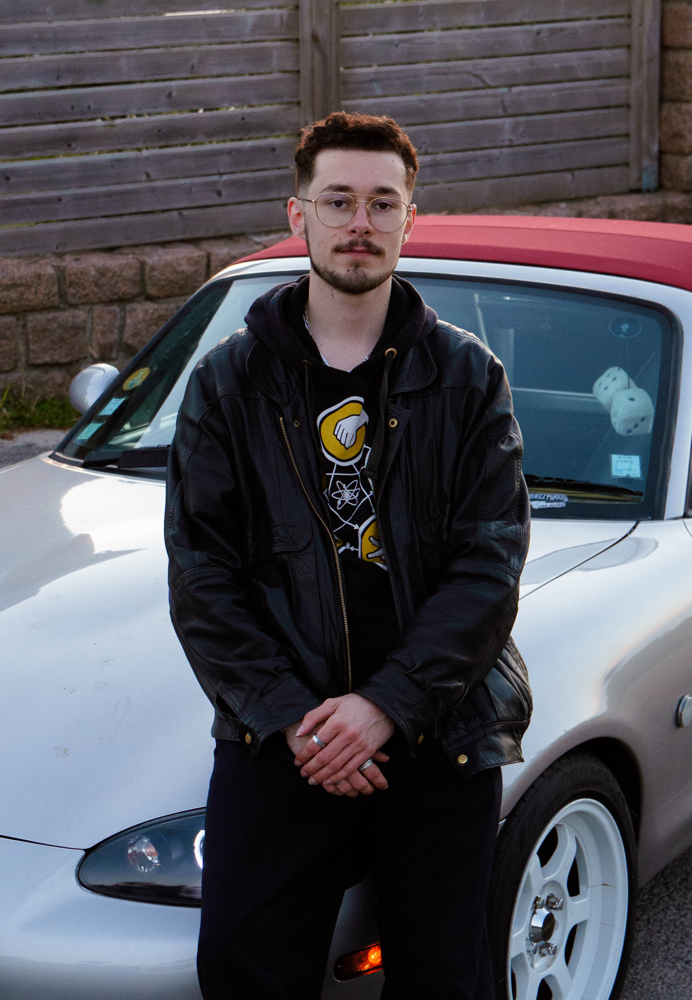

À PROPOS
Je pratique la photographie et la vidéo avec une attention particulière portée aux ambiances, au mouvement et à l’émotion. Mon travail s’inscrit dans une approche de narration visuelle, à travers le rythme, la composition et le ressenti.
J’ai suivi une formation en BUT Métiers du Multimédia et de l’Internet, en alternance pendant deux ans, ce qui m’a permis de développer une expérience concrète du milieu professionnel en tant que chargé de communication, ainsi qu’une approche globale de la création de contenus, de la production à la diffusion.
À la suite de ces trois années, j’ai choisi de me spécialiser dans l’audiovisuel, qui est également une de mes passions. Je poursuis aujourd’hui mon parcours en intégrant un master en création de contenu visuel au sein de Sup de Pub, et je suis actuellement à la recherche d’une alternance afin de continuer à développer mes compétences dans un cadre professionnel.
Ce portfolio présente une sélection de mes réalisations en photographie et en vidéo, afin de donner un aperçu de mon travail. N’hésitez pas à me contacter pour toute opportunité ou échange.
Capturer l'instant, figer l'émotion
Donner vie aux images, raconter des histoires